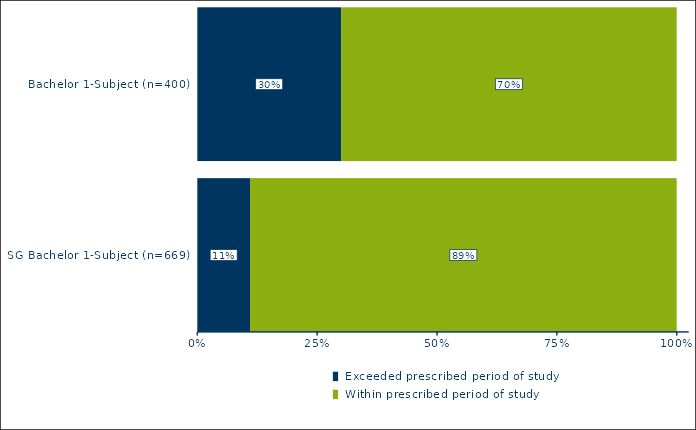

R/rub_plot.R
rub_plot_type_3.RdPlot horizontal stacked bar charts that are scaled to 100% (figure type 3)
rub_plot_type_3( df, x_var, y_var, x_axis_label = "", fill_var, fill_label = NULL, fill_reverse = FALSE, legend_reverse = FALSE, facet_var = NULL, title = "", caption = "", caption_prefix = "Quelle:", filter_cutoff = 0.05, color = RUB_colors["blue"], palette_reverse = FALSE, base_family = "RubFlama", base_size = 11, max_width_axis_text_y = 30, max_width_strip_label = 80, plot_width = 6.8 )
| df | Data frame |
|---|---|
| x_var | Required variable name for the variable containing the discrete x-coordinates. |
| y_var | Required variable name for the variable containing the continuous y-coordinates. |
| x_axis_label | Optional label for the x-axis, defaults to an empty string. |
| fill_var | Variable name for the discrete variable which determines the groups to be stacked, e.g. degree. |
| fill_label | Optional variable name for the character variable containing the names of the fill variable, defaults to NULL. |
| fill_reverse | Boolean indicating whether the order of the fill variable should be reversed, defaults to FALSE. |
| legend_reverse | Optional boolean indicating whether the legend should be reverted, defaults to FALSE. |
| facet_var | Optional variable name for the discrete variable to facet by, defaults to NULL. |
| title | Optional plot title |
| caption | Optional character containing the data source for the figure (prefix 'Quelle:' is automatically added). |
| caption_prefix | Optional character containing the prefix for the caption, defaults to 'Quelle:'. |
| filter_cutoff | Optional cutoff value for the suppression of data labels. By default, all values below 0.04 of the total value of the stacked bar chart are suppressed. |
| color | Color for font and borders, defaults to `RUB_colors["blue"]`, i.e. #003560. |
| palette_reverse | Optional boolean indicating whether the colors in the palette should be reversed, defaults to FALSE. |
| base_family | base font family, defaults to RubFlama |
| base_size | base font size, defaults to 11 |
| max_width_axis_text_y | Optional maximum width in characters for the text of the y axis. |
| max_width_strip_label | Optional maximum width in characters for the facet label passed to ggplot2::label_wrap_gen. |
| plot_width | Width of the plot in inches, defaults to 6.8 |
A ggplot object
# Create test values for all three mandatory variables (x_var, y_var, # fill_var) df_t3_ex1 <- tibble::tribble( ~survey_group, ~item_value, ~item_value_percentage, "Bachelor 1-Subject (n=400)", "Exceeded prescribed period of study", 0.30, "Bachelor 1-Subject (n=400)", "Within prescribed period of study", 0.70, "SG Bachelor 1-Subject (n=669)", "Exceeded prescribed period of study", 0.11, "SG Bachelor 1-Subject (n=669)", "Within prescribed period of study", 0.89 ) rub_plot_type_3( df = df_t3_ex1, x_var = item_value_percentage, y_var = survey_group, fill_var = item_value, ) 